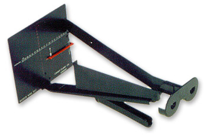

Maddox wing
* Định nghĩa:
+ Một dụng cụ cầm tay để đo lác ẩn ở khoảng cách gần. Nó bao gồm một vách và hai khe hở, mỗi khe cho mỗi mắt. Một mắt nhìn một thước đo tiếp tuyến kép (dọc và ngang) được chia để chỉ ra số diop của lăng kính, trong khi mắt kia nhìn vào mũi tên trắng chỉ lên trên và một mũi tên đỏ chỉ ngang sang trái. Khi hai hình ảnh trên võng mạc hơi khác nhau không có sự gắng để hợp thị và mắt ở tư thế thụ động. Những mũi tên được thấy bởi mắt trái hướng về những số được thấy ở mắt phải. Những số này dại diện cho sự hình thành lác ẩn ngang và dọc, có thể được ghi trực tiếp bởi người quan sát.

Hình: Maddox wing